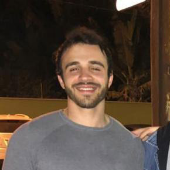

Caio Marchiorato de Gouveia
I'm a graduate student in Agronomy passionate about plant breeding.
Contact Me
GEMEG
Group of study in Plant Breeding
The group started with the idea of uniting undergraduate students who have an interest in the area of genetics and plant breeding, creating a space “outside the classroom” to stimulate debates, developing semantics, oratory and technical-scientific language. Additionally, we also hold professional and academic events and build knowledge in the area of plant genetics and breeding. In general, we seek in-depth knowledge and disseminate that knowledge by offering support to all those involved in the area. We commit to developing, seriously, all tasks through a formal set of rules and guidelines statement.
First of all, our idea was to build a solid scientific base for all members. We did a cycle of presentations, with the Plant Breeding group of the postgraduate, about basic genetics, starting with Mendel until the biotechnology that we own today. My idea at this moment was to balance all the new members in the group, making them understand why we are talking about it, or else, the group purpose.

From there, my partners and I began developing the activities. We participate in GenMelhor events and promote training about software like CorelDraw, R, and Microsoft Excel to the members. Besides that, we had our meeting every week, when we discuss themes in plant breeding.
Seeking to aggregate, even more, we planned a trip to Uberlândia, Minas Gerais, to get to know Syngenta and Bayer Crop Science companies. Everything went perfectly; after this trip, my vision about the plant breeding changed. I got even more excited!
To finish this brief text, these days, I stay like a codirector helping my successors still even better. The group became a family to me. Nowadays, it has 16 members of high capacity, determination, and interest. It was part of my job to listen to everyone. However, as time went by, it became a routine for me. In the end, I was not only talking about plant breeding but also about life. In other words, I became happy because, above all, I made a family in that group.